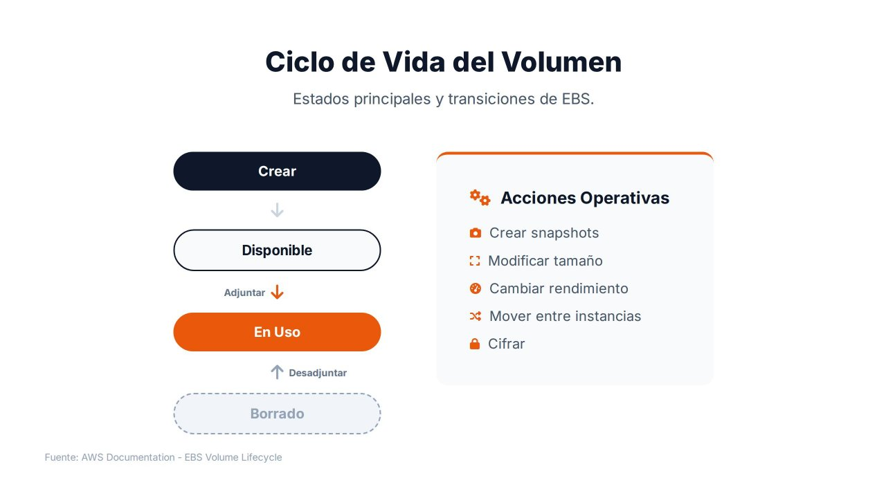
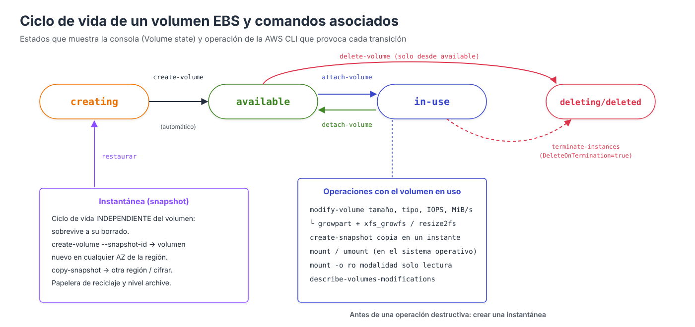

Ciclo de vida de un volumen: crear, montar, modificar y eliminar¶

Como cualquier recurso de infraestructura, un volumen EBS pasa por distintos estados a lo largo de su existencia. Comprender este ciclo de vida y las operaciones que provocan cada transición es fundamental para administrar el almacenamiento, optimizar costes y garantizar que los datos permanezcan protegidos.
Este apartado recorre el ciclo completo de un volumen de datos, combinando las operaciones de AWS (consola o AWS CLI) con las que hay que realizar dentro del sistema operativo, que es donde se crea el sistema de ficheros y donde se monta.
Estados de un volumen¶

| Estado | Significado |
|---|---|
creating |
AWS está aprovisionando el volumen en la AZ seleccionada |
available |
El volumen existe pero no está adjuntado a ninguna instancia. Se paga igualmente |
in-use |
El volumen está adjuntado a una instancia y el sistema operativo puede utilizarlo |
deleting / deleted |
El volumen se está eliminando o ya se ha eliminado. Sin una instantánea previa, los datos se pierden de forma permanente |
error |
Fallo en el hardware subyacente; los datos deben recuperarse de una instantánea |
Además del estado del volumen, cada adjunto tiene su propio estado (attaching, attached, detaching, detached) y cada modificación el suyo (modifying, optimizing, completed).
Volúmenes huérfanos
Un volumen en estado available no está prestando servicio, pero sigue facturándose por su tamaño aprovisionado. Es frecuente que queden volúmenes huérfanos tras terminar instancias cuyos volúmenes de datos tenían DeleteOnTermination desactivado. Revisarlos periódicamente es una optimización de coste sencilla:
En EC2 → Elastic Block Store → Volúmenes, añadir el filtro Estado del volumen = Disponible (Volume state = Available). La lista muestra el tamaño, el tipo y la fecha de creación de cada volumen sin asociar.
1. Crear el volumen¶
Las decisiones que hay que tomar al crear un volumen son:
| Opción | Recomendación |
|---|---|
| Tipo de volumen | gp3 salvo requisitos específicos |
| Tamaño | El necesario hoy más un margen razonable; se puede ampliar después, pero no reducir |
| IOPS y rendimiento | Los valores base de gp3 (3.000 IOPS, 125 MiB/s) salvo que la carga exija más |
| Zona de disponibilidad | La misma que la instancia a la que se va a adjuntar |
| Instantánea | Vacío para un volumen nuevo, o un ID para restaurar datos |
| Cifrado | Activado, con la clave por defecto o con una clave propia |
| Etiquetas | Name, entorno, proyecto… Permiten identificar costes y aplicar políticas de copia |
- Averiguar la AZ de la instancia: EC2 → Instancias, seleccionar la instancia; en la pestaña Redes figura la Zona de disponibilidad (
us-east-1a). - EC2 → Elastic Block Store → Volúmenes → Crear volumen.
- Tipo de volumen: SSD de uso general (
gp3). Tamaño:10GiB. IOPS3000y Rendimiento125(valores base). - Zona de disponibilidad:
us-east-1a, la misma que la instancia. - ID de instantánea: dejar sin instantánea para un volumen vacío.
- Marcar Cifrar este volumen y elegir la clave de KMS (por defecto,
aws/ebs). - Etiquetas:
Name = datos-webybackup = diario. - Pulsar Crear volumen. El estado pasa de Creando a Disponible.
# Averiguar la AZ de la instancia
aws ec2 describe-instances --instance-ids i-0123456789abcdef0 \
--query "Reservations[0].Instances[0].Placement.AvailabilityZone" --output text
aws ec2 create-volume \
--availability-zone us-east-1a \
--size 10 --volume-type gp3 \
--encrypted \
--tag-specifications 'ResourceType=volume,Tags=[{Key=Name,Value=datos-web},{Key=backup,Value=diario}]'
aws ec2 wait volume-available --volume-ids vol-0abc...
2. Adjuntar el volumen a la instancia¶
- EC2 → Elastic Block Store → Volúmenes, seleccionar el volumen (estado Disponible).
- Acciones → Asociar volumen (Attach volume).
- Instancia: elegir la instancia. Solo aparecen las de la misma zona de disponibilidad.
- Nombre del dispositivo:
/dev/sdf(la consola propone uno libre). - Pulsar Asociar volumen. El estado del volumen pasa a En uso.
En las instancias Nitro (la inmensa mayoría de las actuales), el sistema operativo no ve /dev/sdf, sino un dispositivo NVMe. Para identificarlo se utiliza lsblk; el número de serie del dispositivo coincide con el ID del volumen:
lsblk -o NAME,SIZE,TYPE,MOUNTPOINT,SERIAL
# NAME SIZE TYPE MOUNTPOINT SERIAL
# nvme0n1 8G disk vol0123456789abcdef0
# ├─nvme0n1p1 8G part /
# nvme1n1 10G disk vol0abc... <- el nuevo volumen
3. Crear el sistema de ficheros¶
Un volumen nuevo está vacío: no tiene sistema de ficheros. Antes de formatear hay que asegurarse de que efectivamente está vacío, porque formatear un volumen restaurado desde una instantánea destruiría sus datos:
sudo file -s /dev/nvme1n1
# /dev/nvme1n1: data -> vacío: se puede formatear
# /dev/nvme1n1: SGI XFS filesystem data -> ya tiene datos: NO formatear
sudo mkfs -t xfs /dev/nvme1n1
4. Montar el volumen¶
Montaje manual¶
Montaje permanente con /etc/fstab¶
El montaje manual se pierde al reiniciar. Para que sea permanente se añade una línea a /etc/fstab. Es importante utilizar el UUID del sistema de ficheros y no el nombre del dispositivo, porque en NVMe el orden de los nombres puede cambiar entre arranques:
sudo blkid /dev/nvme1n1
# /dev/nvme1n1: UUID="aaaa-bbbb-..." TYPE="xfs"
echo 'UUID=aaaa-bbbb-... /datos xfs defaults,nofail 0 2' | sudo tee -a /etc/fstab
# Comprobar SIN reiniciar: si hay un error, mount -a lo mostrará
sudo umount /datos
sudo mount -a
findmnt /datos
| Opción | Función |
|---|---|
defaults |
Opciones estándar: lectura/escritura, montaje automático… |
nofail |
Si el volumen no está adjuntado, la instancia arranca igualmente. Sin ella, un volumen ausente puede impedir el arranque |
0 (quinto campo) |
No se incluye en las copias de dump |
2 (sexto campo) |
Orden de comprobación con fsck (1 para el raíz, 2 para el resto) |
Un error en /etc/fstab puede dejar la instancia sin arrancar
Comprobar siempre con sudo mount -a antes de reiniciar. Si la instancia no arranca, la recuperación consiste en detenerla, desadjuntar su volumen raíz, adjuntarlo a otra instancia, corregir el fichero y volver a adjuntarlo: un ejemplo práctico de la utilidad de desadjuntar volúmenes.
Modalidad de acceso: solo lectura o lectura/escritura¶
Por defecto el volumen se monta en lectura/escritura. Para garantizar que una instancia solo pueda leer (por ejemplo, un volumen con datos de referencia restaurado desde una instantánea), se monta con la opción ro:
sudo mount -o ro /dev/nvme1n1 /datos # montaje manual en solo lectura
sudo mount -o remount,ro /datos # pasar a solo lectura un montaje existente
# En /etc/fstab:
# UUID=aaaa-bbbb-... /datos xfs ro,nofail 0 2
Dentro del sistema de ficheros, el acceso de cada usuario se controla con los permisos POSIX habituales (chown, chmod):
Origen del acceso
Un volumen EBS solo es accesible desde la instancia a la que está adjuntado: no tiene dirección de red ni grupo de seguridad. Controlar desde dónde se accede a los datos significa controlar quién puede adjuntar el volumen (permisos de IAM sobre ec2:AttachVolume) y quién puede acceder a la instancia.
5. Modificar el volumen (Elastic Volumes)¶
Mientras el volumen está en uso se puede:
- Aumentar el tamaño (nunca reducirlo).
- Cambiar el tipo (por ejemplo, de
gp2agp3, o degp3aio2). - Ajustar las IOPS y el rendimiento aprovisionados.
- EC2 → Elastic Block Store → Volúmenes, seleccionar el volumen.
- Acciones → Modificar volumen (Modify volume).
- Cambiar el Tipo de volumen, el Tamaño, las IOPS o el Rendimiento. La consola muestra los valores actuales junto a los nuevos.
- Pulsar Modificar y confirmar.
- Seguimiento: la columna Estado del volumen muestra En uso – modificando y después En uso – optimizando (n %) hasta completarse.
aws ec2 modify-volume --volume-id vol-0abc... --size 20
aws ec2 modify-volume --volume-id vol-0abc... --volume-type gp3 --iops 6000 --throughput 250
# Seguimiento de la modificación
aws ec2 describe-volumes-modifications --volume-ids vol-0abc... \
--query "VolumesModifications[0].[ModificationState,Progress,TargetSize]"
La modificación pasa por los estados modifying → optimizing → completed. En cuanto entra en optimizing, el nuevo tamaño ya puede utilizarse, aunque el rendimiento puede variar hasta que termine la optimización.
| Restricción | Detalle |
|---|---|
| No se puede reducir | Para disminuir el tamaño hay que crear un volumen más pequeño y copiar los datos |
| Frecuencia | Desde enero de 2026, hasta 4 modificaciones por volumen en una ventana móvil de 24 horas, siempre que la anterior haya terminado (antes había que esperar 6 horas entre modificaciones) |
| Límites del tipo | st1 y sc1 requieren al menos 125 GiB; las IOPS máximas dependen del tamaño |
Ampliar el sistema de ficheros¶
Ampliar el volumen no amplía el sistema de ficheros. AWS cambia el tamaño del dispositivo de bloques, pero el sistema operativo sigue utilizando el espacio anterior hasta que se extiende la partición (si la hay) y el sistema de ficheros:
lsblk # el disco ya muestra el nuevo tamaño
df -h /datos # el sistema de ficheros, todavía el antiguo
# Volumen SIN particiones (el caso del volumen de datos creado arriba)
sudo xfs_growfs -d /datos # xfs: se indica el punto de montaje
sudo resize2fs /dev/nvme1n1 # ext4: se indica el dispositivo
# Volumen CON particiones (por ejemplo, el volumen raíz)
sudo growpart /dev/nvme0n1 1 # extiende la partición 1
sudo xfs_growfs -d / # extiende el sistema de ficheros
df -h /datos # ya muestra el nuevo tamaño
Toda la operación se realiza en caliente, sin desmontar el volumen ni detener la instancia.
Buena práctica
Antes de una modificación importante, crear una instantánea. Aunque Elastic Volumes no borra datos, un error al extender la partición o el sistema de ficheros sí podría dañarlos.
6. Desmontar y desadjuntar¶
Para retirar un volumen de una instancia, primero se desmonta en el sistema operativo y después se desadjunta en AWS.
En la instancia:
sudo umount /datos
# Si devuelve "target is busy", averiguar qué proceso lo usa:
sudo lsof +f -- /datos
# Y eliminar o comentar su línea en /etc/fstab
En AWS:
- EC2 → Elastic Block Store → Volúmenes, seleccionar el volumen (estado En uso).
- Acciones → Desasociar volumen (Detach volume) y confirmar.
- El estado pasa a Disponible.
Solo si el sistema operativo no responde se utiliza Forzar la desasociación, con riesgo de pérdida de datos.
No desadjuntar sin desmontar
Desadjuntar un volumen montado equivale a desenchufar un disco en uso: los datos en caché pueden perderse y el sistema de ficheros quedar inconsistente. El volumen raíz no puede desadjuntarse con la instancia en marcha: hay que detenerla antes.
El volumen vuelve al estado available y puede adjuntarse a otra instancia de la misma AZ.
7. Eliminar el volumen¶
- EC2 → Elastic Block Store → Volúmenes, seleccionar el volumen (estado Disponible).
- Acciones → Crear instantánea con la descripción «Final antes de borrar», por si los datos se necesitan en el futuro.
- Acciones → Eliminar volumen (Delete volume) y confirmar.
Solo pueden eliminarse volúmenes en estado available. Las instantáneas tienen un ciclo de vida independiente: pueden conservarse durante meses o años después de borrar el volumen y utilizarse en cualquier momento para recuperarlo.
Eliminación al terminar la instancia¶
| Volumen | DeleteOnTermination por defecto |
|---|---|
| Raíz creado al lanzar la instancia | true: se borra al terminarla |
| Volúmenes adicionales en el lanzamiento | true en la consola, configurable |
| Volúmenes adjuntados después | false: sobreviven a la instancia |
El atributo puede cambiarse, por ejemplo para proteger el volumen raíz de un servidor importante:
- Al lanzar la instancia: en Configurar almacenamiento → Avanzado, desplegar cada volumen y establecer Eliminar al terminar en No.
- En una instancia existente: la pestaña Almacenamiento de la instancia muestra el valor de Eliminar al terminar de cada volumen, pero la consola no permite cambiarlo. Para ello hay que usar la AWS CLI (o la API).
Referencias¶
- AWS. Amazon EBS volume lifecycle — Ciclo de vida del volumen
- AWS. Make an Amazon EBS volume available for use — Formatear y montar
- AWS. Modify a volume using Amazon EBS Elastic Volumes — Elastic Volumes
- AWS. Extend the file system after resizing an Amazon EBS volume — Ampliar el sistema de ficheros
- AWS. Detach an Amazon EBS volume from an instance — Desadjuntar
- Classmethod. EBS Elastic Volumes: the 6-hour wait time is gone, up to 4 modifications within 24 hours (01/2026) — Artículo